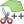

Split Features On Steroids
Developed by Antonio Carlón
Start editing a polygon/multipolygon feature and select the  Split Features On Steroids tool. The tool will show the resulting areas on each side of the cutting line.
Select the Move vertices tool to edit the vertices of the cutting line.
Select the Add vertices tool to add vertices in the middle of the cutting line.
Select the Remove vertices tool to remove vertices from the cutting line.
Select the Move segment tool to move the segments of the cutting line.
Select the Close line tool to close the cutting line (to make holes).
Select the Open line tool when the line is closed to open the cutting line.
Select the Move line tool to move the cutting line.
Developed by Antonio Carlón